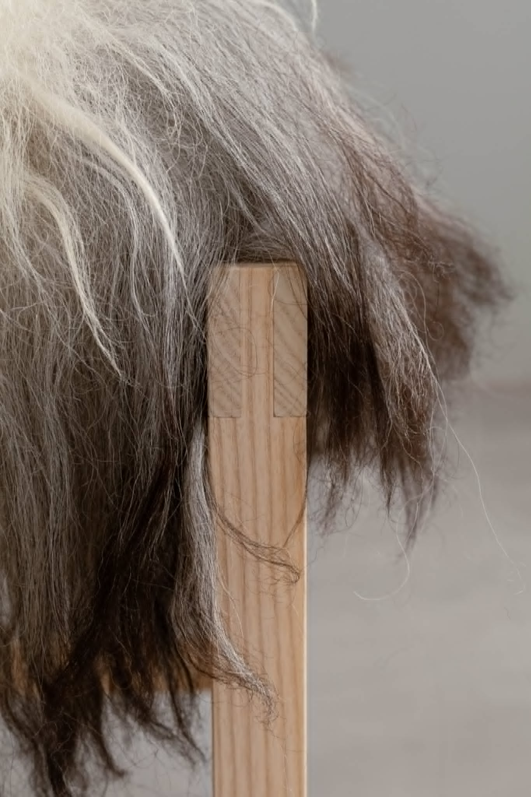

Fra idé til færdigt håndværk
Her kan du se et udvalg af mine tidligere projekter.
Siden giver et indblik i både møbler og større håndværksprojekter,
hvor fokus har været på kvalitet, materialer og godt håndværk.
